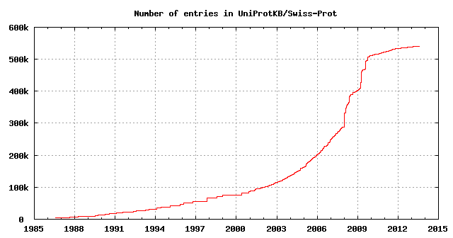
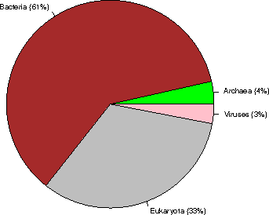
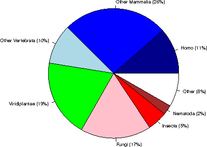
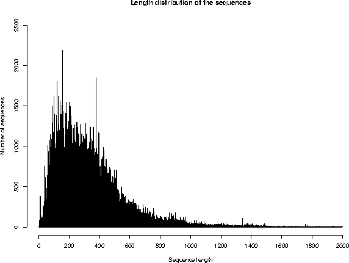
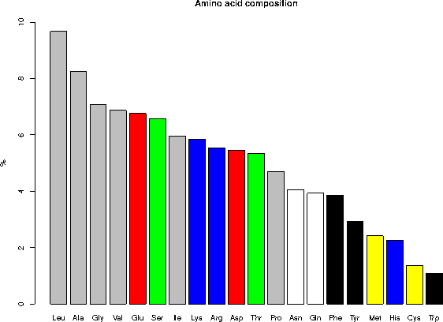

UniProtKB/Swiss-Prot protein knowledgebase release 2013_08 statistics
1. INTRODUCTION
Release 2013_08 of 24-Jul-13 of UniProtKB/Swiss-Prot contains 540732 sequence entries,
comprising 192091492 amino acids abstracted from 221115 references.
187 sequences have been added since release 2013_07, the sequence data of
60 existing entries has been updated and the annotations of
96142 entries have been revised.
Number of fragments: 9065
Number of additional sequences produced by alternative splicing, initiation or promoter usage, or ribosomal frameshifting: 35297
Protein existence (PE): entries %
1: Evidence at protein level 79739 14.7%
2: Evidence at transcript level 64210 11.9%
3: Inferred from homology 379215 70.1%
4: Predicted 15667 2.9%
5: Uncertain 1901 0.4%
The growth of the database is summarized below.

2. TAXONOMIC ORIGIN
Total number of species represented in this release of UniProtKB/Swiss-Prot: 13004
The first twenty species represent 113672 sequences: 21 % of the total
number of entries.
2.1 Table of the frequency of occurrence of species
Species represented 1x: 5430
2x: 1892
3x: 991
4x: 643
5x: 469
6x: 394
7x: 285
8x: 217
9x: 208
10x: 121
11- 20x: 695
21- 50x: 406
51-100x: 212
>100x: 1041
2.2 Table of the most represented species
------ --------- --------------------------------------------
Number Frequency Species
------ --------- --------------------------------------------
1 20266 Homo sapiens (Human)
2 16618 Mus musculus (Mouse)
3 12224 Arabidopsis thaliana (Mouse-ear cress)
4 7858 Rattus norvegicus (Rat)
5 6621 Saccharomyces cerevisiae (strain ATCC 204508 / S288c) (Baker's yeast)
6 5980 Bos taurus (Bovine)
7 5089 Schizosaccharomyces pombe (strain 972 / ATCC 24843) (Fission yeast)
8 4431 Escherichia coli (strain K12)
9 4188 Bacillus subtilis (strain 168)
10 4126 Dictyostelium discoideum (Slime mold)
11 3431 Caenorhabditis elegans
12 3371 Xenopus laevis (African clawed frog)
13 3198 Drosophila melanogaster (Fruit fly)
14 3065 Oryza sativa subsp. japonica (Rice)
15 2898 Danio rerio (Zebrafish) (Brachydanio rerio)
16 2256 Gallus gallus (Chicken)
17 2218 Pongo abelii (Sumatran orangutan) (Pongo pygmaeus abelii)
18 2032 Mycobacterium tuberculosis
19 2015 Escherichia coli O157:H7
20 1787 Methanocaldococcus jannaschii
21 1771 Salmonella typhimurium (strain LT2 / SGSC1412 / ATCC 700720)
22 1707 Haemophilus influenzae (strain ATCC 51907 / DSM 11121 / KW20 / Rd)
23 1694 Xenopus tropicalis (Western clawed frog) (Silurana tropicalis)
24 1684 Escherichia coli O6:H1 (strain CFT073 / ATCC 700928 / UPEC)
25 1678 Shigella flexneri
26 1413 Sus scrofa (Pig)
27 1346 Salmonella typhi
28 1247 Pseudomonas aeruginosa (strain ATCC 15692 / PAO1 / 1C / PRS 101 / LMG 12228)
29 1242 Mycobacterium bovis (strain ATCC BAA-935 / AF2122/97)
30 1170 Macaca fascicularis (Crab-eating macaque) (Cynomolgus monkey)
31 1036 Synechocystis sp. (strain PCC 6803 / Kazusa)
32 1018 Yersinia pestis
33 1015 Archaeoglobus fulgidus
34 950 Vibrio cholerae serotype O1 (strain ATCC 39315 / El Tor Inaba N16961)
35 930 Salmonella paratyphi A (strain ATCC 9150 / SARB42)
36 926 Ashbya gossypii (strain ATCC 10895 / CBS 109.51 / FGSC 9923 / NRRL Y-1056)
37 925 Staphylococcus aureus (strain N315)
38 923 Staphylococcus aureus (strain Mu50 / ATCC 700699)
39 909 Acanthamoeba polyphaga mimivirus (APMV)
40 905 Kluyveromyces lactis
41 899 Staphylococcus aureus (strain COL)
42 895 Staphylococcus aureus (strain MW2)
43 889 Escherichia coli O6:K15:H31 (strain 536 / UPEC)
44 889 Staphylococcus aureus (strain MSSA476)
45 889 Oryctolagus cuniculus (Rabbit)
46 888 Staphylococcus aureus (strain MRSA252)
47 882 Salmonella choleraesuis (strain SC-B67)
48 878 Shigella sonnei (strain Ss046)
49 869 Rhizobium meliloti (strain 1021) (Ensifer meliloti) (Sinorhizobium meliloti)
50 863 Yersinia pseudotuberculosis serotype I (strain IP32953)
51 862 Candida glabrata
52 841 Escherichia coli O9:H4 (strain HS)
53 836 Neurospora crassa
54 834 Escherichia coli O139:H28 (strain E24377A / ETEC)
55 829 Shigella boydii serotype 4 (strain Sb227)
56 825 Escherichia coli (strain UTI89 / UPEC)
57 821 Shigella dysenteriae serotype 1 (strain Sd197)
58 819 Escherichia coli (strain ATCC 8739 / DSM 1576 / Crooks)
59 803 Canis familiaris (Dog) (Canis lupus familiaris)
60 791 Escherichia coli (strain SMS-3-5 / SECEC)
61 787 Vibrio parahaemolyticus serotype O3:K6 (strain RIMD 2210633)
62 783 Erwinia carotovora subsp. atroseptica (strain SCRI 1043 / ATCC BAA-672)
63 782 Aquifex aeolicus (strain VF5)
64 775 Pasteurella multocida (strain Pm70)
65 775 Emericella nidulans
66 771 Escherichia coli (strain K12 / DH10B)
67 765 Escherichia coli O127:H6 (strain E2348/69 / EPEC)
68 765 Escherichia coli (strain K12 / MC4100 / BW2952)
69 764 Escherichia coli O17:K52:H18 (strain UMN026 / ExPEC)
70 762 Escherichia coli (strain 55989 / EAEC)
71 761 Escherichia coli O8 (strain IAI1)
72 760 Shigella flexneri serotype 5b (strain 8401)
73 759 Staphylococcus epidermidis (strain ATCC 35984 / RP62A)
74 758 Staphylococcus epidermidis (strain ATCC 12228)
75 757 Streptomyces coelicolor (strain ATCC BAA-471 / A3(2) / M145)
76 756 Escherichia coli (strain SE11)
77 756 Escherichia coli O45:K1 (strain S88 / ExPEC)
78 753 Escherichia coli O7:K1 (strain IAI39 / ExPEC)
79 748 Escherichia coli O157:H7 (strain EC4115 / EHEC)
80 744 Photorhabdus luminescens subsp. laumondii (strain TT01)
81 740 Staphylococcus aureus (strain NCTC 8325)
82 739 Candida albicans (strain SC5314 / ATCC MYA-2876) (Yeast)
83 736 Bacillus anthracis
84 736 Bacillus halodurans
85 735 Yersinia enterocolitica serotype O:8 / biotype 1B (strain 8081)
86 733 Vibrio vulnificus (strain CMCP6)
87 731 Escherichia coli O81 (strain ED1a)
88 721 Salmonella enteritidis PT4 (strain P125109)
89 718 Zea mays (Maize)
90 717 Vibrio vulnificus (strain YJ016)
91 716 Salmonella paratyphi B (strain ATCC BAA-1250 / SPB7)
92 715 Yersinia pestis bv. Antiqua (strain Nepal516)
93 714 Salmonella paratyphi A (strain AKU_12601)
94 713 Klebsiella pneumoniae subsp. pneumoniae (strain ATCC 700721 / MGH 78578)
95 713 Enterobacter sp. (strain 638)
96 713 Salmonella agona (strain SL483)
97 713 Escherichia coli O1:K1 / APEC
98 713 Salmonella newport (strain SL254)
99 713 Yersinia pseudotuberculosis serotype O:1b (strain IP 31758)
100 712 Salmonella schwarzengrund (strain CVM19633)
101 711 Yersinia pestis bv. Antiqua (strain Antiqua)
102 710 Salmonella heidelberg (strain SL476)
103 702 Salmonella dublin (strain CT_02021853)
104 698 Shigella boydii serotype 18 (strain CDC 3083-94 / BS512)
105 696 Klebsiella pneumoniae (strain 342)
106 695 Escherichia fergusonii (strain ATCC 35469 / DSM 13698 / CDC 0568-73)
107 693 Pseudomonas putida (strain KT2440)
108 689 Nostoc sp. (strain PCC 7120 / UTEX 2576)
109 688 Pan troglodytes (Chimpanzee)
110 687 Mycoplasma pneumoniae (strain ATCC 29342 / M129)
111 683 Salmonella gallinarum (strain 287/91 / NCTC 13346)
112 678 Citrobacter koseri (strain ATCC BAA-895 / CDC 4225-83 / SGSC4696)
113 675 Pseudomonas syringae pv. tomato (strain DC3000)
114 670 Serratia proteamaculans (strain 568)
115 668 Mycobacterium leprae (strain TN)
116 667 Yersinia pestis (strain Pestoides F)
117 666 Staphylococcus aureus (strain USA300)
118 658 Rhizobium sp. (strain NGR234)
119 658 Bradyrhizobium japonicum (strain USDA 110)
120 656 Neosartorya fumigata (strain ATCC MYA-4609 / Af293 / CBS 101355 / FGSC A1100)
121 653 Debaryomyces hansenii
122 652 Bacillus cereus (strain ATCC 14579 / DSM 31)
123 646 Escherichia coli
124 643 Staphylococcus aureus (strain bovine RF122 / ET3-1)
125 642 Salmonella arizonae (strain ATCC BAA-731 / CDC346-86 / RSK2980)
126 642 Yarrowia lipolytica (strain CLIB 122 / E 150) (Yeast) (Candida lipolytica)
127 638 Yersinia pseudotuberculosis serotype O:3 (strain YPIII)
128 635 Shewanella oneidensis (strain MR-1)
129 634 Yersinia pseudotuberculosis serotype IB (strain PB1/+)
130 632 Agrobacterium tumefaciens (strain C58 / ATCC 33970)
131 623 Oryza sativa subsp. indica (Rice)
132 622 Cronobacter sakazakii (strain ATCC BAA-894) (Enterobacter sakazakii)
133 616 Treponema pallidum (strain Nichols)
134 614 Methanothermobacter thermautotrophicus
135 612 Staphylococcus haemolyticus (strain JCSC1435)
136 606 Rhizobium loti (strain MAFF303099) (Mesorhizobium loti)
137 605 Xanthomonas campestris pv. campestris (strain ATCC 33913 / NCPPB 528 / LMG 568)
138 602 Ralstonia solanacearum (strain GMI1000) (Pseudomonas solanacearum)
139 602 Listeria monocytogenes serovar 1/2a (strain ATCC BAA-679 / EGD-e)
140 602 Photobacterium profundum (Photobacterium sp. (strain SS9))
141 602 Staphylococcus saprophyticus subsp. saprophyticus
142 601 Salmonella paratyphi C (strain RKS4594)
143 600 Yersinia pestis bv. Antiqua (strain Angola)
144 591 Listeria innocua serovar 6a (strain CLIP 11262)
145 590 Bacillus cereus (strain ATCC 10987)
146 589 Pectobacterium carotovorum subsp. carotovorum (strain PC1)
147 586 Rickettsia prowazekii (strain Madrid E)
148 581 Helicobacter pylori (strain ATCC 700392 / 26695) (Campylobacter pylori)
149 579 Neisseria meningitidis serogroup B (strain MC58)
150 576 Brucella suis biovar 1 (strain 1330)
151 572 Brucella melitensis biotype 1 (strain 16M / ATCC 23456 / NCTC 10094)
152 572 Buchnera aphidicola subsp. Acyrthosiphon pisum (strain APS)
153 568 Caenorhabditis briggsae
154 567 Bacillus thuringiensis subsp. konkukian (strain 97-27)
155 566 Pseudomonas syringae pv. syringae (strain B728a)
156 565 Helicobacter pylori (strain J99) (Campylobacter pylori J99)
157 565 Caulobacter crescentus (strain ATCC 19089 / CB15)
158 564 Vibrio fischeri (strain ATCC 700601 / ES114)
159 564 Pseudomonas aeruginosa (strain UCBPP-PA14)
160 563 Bacillus licheniformis (strain DSM 13 / ATCC 14580)
161 562 Buchnera aphidicola subsp. Schizaphis graminum (strain Sg)
162 561 Bacillus cereus (strain ZK / E33L)
163 557 Clostridium acetobutylicum
164 556 Xanthomonas axonopodis pv. citri (strain 306)
165 552 Oceanobacillus iheyensis (strain DSM 14371 / JCM 11309 / KCTC 3954 / HTE831)
166 552 Neisseria meningitidis serogroup A / serotype 4A (strain Z2491)
167 552 Pseudomonas fluorescens (strain Pf0-1)
168 546 Pseudomonas fluorescens (strain Pf-5 / ATCC BAA-477)
169 545 Pseudomonas syringae pv. phaseolicola (strain 1448A / Race 6)
170 533 Lactococcus lactis subsp. lactis (strain IL1403) (Streptococcus lactis)
171 532 Thermotoga maritima (strain ATCC 43589 / MSB8 / DSM 3109 / JCM 10099)
172 531 Erwinia tasmaniensis (strain DSM 17950 / Et1/99)
173 529 Sodalis glossinidius (strain morsitans)
174 529 Listeria monocytogenes serotype 4b (strain F2365)
175 523 Bordetella bronchiseptica (strain ATCC BAA-588 / NCTC 13252 / RB50)
176 522 Xylella fastidiosa (strain 9a5c)
177 515 Chromobacterium violaceum
178 515 Bordetella pertussis (strain Tohama I / ATCC BAA-589 / NCTC 13251)
179 513 Corynebacterium glutamicum
180 512 Xylella fastidiosa (strain Temecula1 / ATCC 700964)
181 511 Pseudomonas aeruginosa (strain PA7)
182 511 Vibrio cholerae serotype O1 (strain ATCC 39541 / Ogawa 395 / O395)
183 510 Haemophilus ducreyi (strain 35000HP / ATCC 700724)
184 508 Staphylococcus aureus (strain Newman)
185 508 Bordetella parapertussis (strain 12822 / ATCC BAA-587 / NCTC 13253)
186 507 Buchnera aphidicola subsp. Baizongia pistaciae (strain Bp)
187 507 Geobacillus kaustophilus (strain HTA426)
188 505 Streptomyces avermitilis
189 502 Streptococcus pneumoniae serotype 4 (strain ATCC BAA-334 / TIGR4)
190 502 Deinococcus radiodurans
191 500 Pseudomonas entomophila (strain L48)
192 499 Brucella abortus biovar 1 (strain 9-941)
193 497 Rickettsia conorii (strain ATCC VR-613 / Malish 7)
194 496 Bacillus clausii (strain KSM-K16)
195 495 Burkholderia pseudomallei (strain K96243)
196 495 Haemophilus influenzae (strain 86-028NP)
197 494 Proteus mirabilis (strain HI4320)
198 492 Methanosarcina acetivorans (strain ATCC 35395 / DSM 2834 / JCM 12185 / C2A)
199 492 Bacillus amyloliquefaciens (strain FZB42)
200 491 Xanthomonas campestris pv. campestris (strain 8004)
201 490 Vibrio harveyi (strain ATCC BAA-1116 / BB120)
202 487 Shewanella sp. (strain MR-7)
203 486 Mannheimia succiniciproducens (strain MBEL55E)
204 484 Pseudomonas aeruginosa (strain LESB58)
205 484 Staphylococcus aureus (strain Mu3 / ATCC 700698)
206 484 Shewanella sp. (strain MR-4)
207 483 Mycoplasma genitalium (strain ATCC 33530 / G-37 / NCTC 10195)
208 482 Thermosynechococcus elongatus (strain BP-1)
209 480 Pyrococcus furiosus (strain ATCC 43587 / DSM 3638 / JCM 8422 / Vc1)
210 480 Acinetobacter sp. (strain ADP1)
211 479 Pyrococcus horikoshii
212 478 Synechococcus elongatus (strain PCC 7942) (Anacystis nidulans R2)
213 475 Pseudomonas putida (strain F1 / ATCC 700007)
214 474 Burkholderia sp. (strain 383) (Burkholderia cepacia
215 474 Brucella abortus (strain 2308)
216 473 Streptococcus pneumoniae (strain ATCC BAA-255 / R6)
217 473 Aspergillus oryzae (strain ATCC 42149 / RIB 40) (Yellow koji mold)
218 471 Methanosarcina mazei
219 469 Mycobacterium smegmatis (strain ATCC 700084 / mc(2)155)
220 468 Pyrococcus abyssi (strain GE5 / Orsay)
221 468 Halobacterium salinarum (strain ATCC 700922 / JCM 11081 / NRC-1)
222 468 Clostridium perfringens (strain 13 / Type A)
223 466 Xanthomonas campestris pv. vesicatoria (strain 85-10)
224 466 Shewanella frigidimarina (strain NCIMB 400)
225 466 Pseudomonas putida (strain GB-1)
226 466 Cupriavidus necator (strain ATCC 17699 / H16 / DSM 428 / Stanier 337)
227 464 Aeromonas hydrophila subsp. hydrophila (strain ATCC 7966 / NCIB 9240)
228 463 Rhodopseudomonas palustris (strain ATCC BAA-98 / CGA009)
229 463 Shewanella sp. (strain ANA-3)
230 462 Burkholderia mallei (strain ATCC 23344)
231 462 Anabaena variabilis (strain ATCC 29413 / PCC 7937)
232 461 Lactobacillus plantarum (strain ATCC BAA-793 / NCIMB 8826 / WCFS1)
233 460 Rhodobacter sphaeroides (strain ATCC 17023 / 2.4.1 / NCIB 8253 / DSM 158)
234 459 Cupriavidus pinatubonensis (strain JMP134 / LMG 1197) (Alcaligenes eutrophus)
235 458 Enterococcus faecalis (strain ATCC 700802 / V583)
236 455 Staphylococcus aureus (strain JH1)
237 455 Nicotiana tabacum (Common tobacco)
238 454 Methylococcus capsulatus (strain ATCC 33009 / NCIMB 11132 / Bath)
239 454 Ovis aries (Sheep)
240 454 Xanthomonas oryzae pv. oryzae (strain MAFF 311018)
241 453 Pseudomonas putida (strain W619)
242 453 Rickettsia felis (strain ATCC VR-1525 / URRWXCal2) (Rickettsia azadi)
243 452 Sulfolobus solfataricus (strain ATCC 35092 / DSM 1617 / JCM 11322 / P2)
244 452 Shewanella baltica (strain OS185)
245 451 Campylobacter jejuni subsp. jejuni serotype O:2 (strain NCTC 11168)
246 451 Aeromonas salmonicida (strain A449)
247 449 Thermoanaerobacter tengcongensis
248 449 Staphylococcus aureus (strain JH9)
249 449 Hahella chejuensis (strain KCTC 2396)
250 449 Mycobacterium paratuberculosis (strain ATCC BAA-968 / K-10)
2.3 Taxonomic distribution of the sequences

Kingdom sequences (% of the database)
Archaea 19038 ( 4%)
Bacteria 329008 ( 61%)
Eukaryota 176340 ( 33%)
Viruses 16346 ( 3%)
Within Eukaryota:

Category sequences (% of Eukaryota) (% of the complete database)
Human 20267 ( 11%) ( 4%)
Other Mammalia 45907 ( 26%) ( 8%)
Other Vertebrata 17498 ( 10%) ( 3%)
Viridiplantae 34107 ( 19%) ( 6%)
Fungi 30859 ( 17%) ( 6%)
Insecta 8693 ( 5%) ( 2%)
Nematoda 4306 ( 2%) ( 1%)
Other 14703 ( 8%) ( 3%)
3. SEQUENCE SIZE
Repartition of the sequences by size (excluding fragments)
From To Number From To Number
1- 50 9065 1001-1100 3752
51- 100 41424 1101-1200 2600
101- 150 57705 1201-1300 2025
151- 200 57795 1301-1400 1885
201- 250 56516 1401-1500 1512
251- 300 50017 1501-1600 737
301- 350 50203 1601-1700 567
351- 400 43443 1701-1800 470
401- 450 35542 1801-1900 432
451- 500 28608 1901-2000 352
501- 550 20364 2001-2100 214
551- 600 14625 2101-2200 288
601- 650 12274 2201-2300 297
651- 700 8854 2301-2400 181
701- 750 7298 2401-2500 138
751- 800 5188 >2500 1090
801- 850 4537
851- 900 5031
901- 950 3881
951-1000 2757

The average sequence length in UniProtKB/Swiss-Prot is 355 amino acids.
The shortest sequence is GWA_SEPOF (P83570): 2 amino acids.
The longest sequence is TITIN_MOUSE (A2ASS6): 35213 amino acids.
4. JOURNAL CITATIONS
Note: the following citation statistics reflect the number of distinct
journal citations.
Total number of journals cited in this release of UniProtKB/Swiss-Prot: 2336
4.1 Table of the frequency of journal citations
Journals cited 1x: 758
2x: 311
3x: 156
4x: 114
5x: 90
6x: 72
7x: 60
8x: 41
9x: 39
10x: 32
11- 20x: 183
21- 50x: 190
51-100x: 101
>100x: 189
4.2 List of the most cited journals in UniProtKB/Swiss-Prot
Nb Citations Journal name
-- --------- -------------------------------------------------------------
1 21269 Journal of Biological Chemistry
2 9611 Proceedings of the National Academy of Sciences of the U.S.A.
3 5754 Journal of Bacteriology
4 5063 Biochemical and Biophysical Research Communications
5 4609 Gene
6 4582 Nucleic Acids Research
7 4489 Biochemistry
8 4384 FEBS Letters
9 4244 The EMBO Journal
10 3937 Molecular and Cellular Biology
11 3745 Nature
12 3601 Journal of Molecular Biology
13 3246 European Journal of Biochemistry
14 3235 Biochimica et Biophysica Acta
15 3061 Cell
16 2610 Journal of Virology
17 2519 Biochemical Journal
18 2511 Genomics
19 2487 Science
20 2078 Molecular Microbiology
21 1894 Plant Physiology
22 1890 Journal of Cell Biology
23 1657 Plant Molecular Biology
24 1615 The American Journal of Human Genetics
25 1608 Genes and Development
26 1543 Virology
27 1522 Nature Genetics
28 1461 Human Molecular Genetics
29 1446 Oncogene
30 1354 Development
31 1349 Molecular and General Genetics
32 1346 Molecular Biology of the Cell
33 1319 Human Mutation
34 1318 The Plant Cell
35 1243 Journal of Biochemistry
36 1208 The Plant Journal
37 1193 Journal of Immunology
38 1177 Molecular Cell
39 1112 Genetics
40 1093 Structure
41 1035 Journal of General Virology
42 984 Blood
43 960 Journal of Cell Science
44 958 Infection and Immunity
45 933 Archives of Biochemistry and Biophysics
46 873 Microbiology
47 845 Developmental Biology
48 814 Cancer Research
49 805 Current Biology
50 789 Yeast
51 737 FEMS Microbiology Letters
52 691 Acta Crystallographica, Section D
53 664 Protein Science
54 654 Journal of Neuroscience
55 652 Toxicon
56 649 Applied and Environmental Microbiology
57 628 Human Genetics
58 627 Nature Structural Biology
59 626 Mechanisms of Development
60 622 PLoS ONE
61 594 Neuron
62 577 Journal of Clinical Investigation
63 548 American Journal of Physiology
64 541 Current Genetics
65 532 The Journal of Experimental Medicine
66 504 Proteins
67 490 Molecular Endocrinology
68 486 Plant and Cell Physiology
69 479 Mammalian Genome
70 468 Journal of Neurochemistry
71 459 Immunogenetics
72 453 Nature Cell Biology
73 450 Bioscience, Biotechnology, and Biochemistry
74 446 The Journal of Clinical Endocrinology and Metabolism
75 438 Endocrinology
76 430 Journal of Medical Genetics
77 430 Molecular and Biochemical Parasitology
78 400 Journal of Molecular Evolution
79 381 Experimental Cell Research
80 379 Molecular Biology and Evolution
81 377 DNA and Cell Biology
82 366 DNA Sequence
83 354 Peptides
84 344 Nature Structural and Molecular Biology
85 333 RNA
86 330 Developmental Cell
87 329 Brain Research. Molecular Brain Research
88 328 The FEBS Journal
89 325 Tissue Antigens
90 320 Antimicrobial Agents and Chemotherapy
91 320 Comparative Biochemistry and Physiology
92 310 Journal of Investigative Dermatology
93 306 Planta
94 305 Molecular Pharmacology
95 294 Biological Chemistry Hoppe-Seyler
96 287 Biology of Reproduction
97 283 Neurology
98 279 Cytogenetics and Cell Genetics
99 274 Eukaryotic Cell
100 273 Developmental Dynamics
101 269 Virus Research
102 267 Genome Research
103 263 EMBO Reports
104 260 Immunity
105 259 Biochimie
106 257 Journal of General Microbiology
107 255 Genes to Cells
108 245 Molecular Plant-Microbe Interactions
109 245 The FASEB Journal
110 240 The New England Journal of Medicine
111 234 European Journal of Immunology
112 227 Annals of Neurology
113 224 European Journal of Human Genetics
114 221 Journal of the American Chemical Society
115 218 Hoppe-Seyler's Zeitschrift fur Physiologische Chemie
116 215 DNA Research
117 212 Journal of Human Genetics
118 203 Investigative Ophthalmology and Visual Science
119 202 Archives of Microbiology
120 202 Acta Crystallographica, Section F
121 198 Nature Immunology
122 197 Journal of Experimental Botany
123 195 Journal of Cellular Biochemistry
124 193 BMC Genomics
125 191 Archives of Virology
126 190 American Journal of Medical Genetics. Part A
127 189 Molecular and Cellular Endocrinology
128 184 Journal of Medicinal Chemistry
129 183 Molecular Immunology
130 181 Glycobiology
131 180 Clinical Genetics
132 175 PLoS Genetics
133 174 Diabetes
134 172 Insect Biochemistry and Molecular Biology
135 170 Circulation Research
136 168 American Journal of Medical Genetics
137 168 Molecular Phylogenetics and Evolution
138 166 International Journal of Cancer
139 165 Traffic
140 163 Phytochemistry
141 161 Molecular Genetics and Metabolism
142 159 Molecular Reproduction and Development
143 159 DNA
144 158 Protein Expression and Purification
145 156 Molecular Genetics and Genomics
146 155 Cell Cycle
147 155 Hemoglobin
148 155 Biological Chemistry
149 154 Bioorganicheskaia Khimiia
150 153 Molecular and Cellular Neuroscience
5. STATISTICS FOR SOME LINE TYPES
The following table summarizes the total number of some UniProtKB/Swiss-Prot lines,
as well as the number of entries with at least one such line, and the
frequency of the lines.
Total Number of Average
Line type / subtype number entries per entry
------------------------------------ -------- --------- ---------
References (RL) 1049336 1.94
Journal 843721 419229 1.56 1
Submitted to EMBL/GenBank/DDBJ 196528 175896 0.36 2
Submitted to other databases 6855 6379 0.01 3
Book citation 724 710 <0.01 4
Plant Gene Register 589 577 <0.01 5
Thesis 417 414 <0.01 6
Unpublished observations 305 301 <0.01 7
Patent 191 188 <0.01 8
Worm Breeder's Gazette 6 6 <0.01 9
Total number of distinct authors cited in UniProtKB/Swiss-Prot: 338670
Total Number of Average
Line type / subtype number entries per entry Rank
------------------------------------ -------- --------- --------- ----
Comments (CC) 2438141 4.51
ALLERGEN 530 530 <0.01 27
ALTERNATIVE PRODUCTS 22302 22302 0.04 13
BIOPHYSICOCHEMICAL PROPERTIES 5065 5065 0.01 23
BIOTECHNOLOGY 357 355 <0.01 28
CATALYTIC ACTIVITY 244649 221349 0.45 5
CAUTION 9407 9233 0.02 19
COFACTOR 108529 99008 0.20 7
DEVELOPMENTAL STAGE 9961 9961 0.02 17
DISEASE 5300 3563 0.01 22
DISRUPTION PHENOTYPE 5926 5926 0.01 20
DOMAIN 39827 35049 0.07 10
ENZYME REGULATION 11252 11252 0.02 15
FUNCTION 423680 406170 0.78 2
INDUCTION 15418 15418 0.03 14
INTERACTION 10252 10252 0.02 16
MASS SPECTROMETRY 5595 4264 0.01 21
MISCELLANEOUS 32840 30340 0.06 12
PATHWAY 131818 119944 0.24 6
PHARMACEUTICAL 93 93 <0.01 29
POLYMORPHISM 903 849 <0.01 24
PTM 44663 34880 0.08 8
RNA EDITING 627 627 <0.01 25
SEQUENCE CAUTION 41227 41227 0.08 9
SIMILARITY 642910 516142 1.19 1
SUBCELLULAR LOCATION 328115 322055 0.61 3
SUBUNIT 247842 247842 0.46 4
TISSUE SPECIFICITY 39039 39039 0.07 11
TOXIC DOSE 553 516 <0.01 26
WEB RESOURCE 9461 7526 0.02 18
Total number of comment topics: 29
Total Number of Average
Line type / subtype number entries per entry Rank
------------------------------------ -------- --------- --------- ----
Features (FT) 3739710 6.92
ACT_SITE 142893 87334 0.26 9
BINDING 295926 78871 0.55 4
CA_BIND 3922 1643 0.01 35
CARBOHYD 107482 27558 0.20 15
CHAIN 547732 534506 1.01 1
COILED 20320 13967 0.04 26
COMPBIAS 54569 28993 0.10 18
CONFLICT 128279 44911 0.24 12
CROSSLNK 6821 3943 0.01 34
DISULFID 109793 30194 0.20 14
DNA_BIND 10402 9477 0.02 31
DOMAIN 161917 96376 0.30 8
HELIX 183644 17855 0.34 6
INIT_MET 15661 15661 0.03 27
INTRAMEM 2176 940 <0.01 37
LIPID 11947 7581 0.02 30
METAL 319832 78521 0.59 3
MOD_RES 162694 60981 0.30 7
MOTIF 36043 23364 0.07 24
MUTAGEN 44311 10294 0.08 22
NON_CONS 2043 751 <0.01 38
NON_STD 354 279 <0.01 39
NON_TER 12212 9330 0.02 29
NP_BIND 121600 73992 0.22 13
PEPTIDE 10326 7038 0.02 32
PROPEP 12690 10921 0.02 28
REGION 135870 68866 0.25 10
REPEAT 95940 14190 0.18 16
SIGNAL 38387 38377 0.07 23
SITE 46891 26000 0.09 19
STRAND 191913 16862 0.35 5
TOPO_DOM 130602 27079 0.24 11
TRANSIT 8414 8309 0.02 33
TRANSMEM 356568 73621 0.66 2
TURN 44662 14468 0.08 21
UNSURE 3361 717 0.01 36
VAR_SEQ 46159 19412 0.09 20
VARIANT 85929 16796 0.16 17
ZN_FING 29425 12940 0.05 25
Total number of feature keys: 39
Total Number of Average
Line type / subtype number entries per entry Rank Category
------------------------------------ -------- --------- --------- ---- -------------------------------------------
Cross-references (DR) 15985728 29.56
Allergome 1505 946 <0.01 101 Protein family/group databases
ArachnoServer 763 755 <0.01 111 Organism-specific databases
ArrayExpress 36302 36302 0.07 46 Gene expression databases
Bgee 38784 38784 0.07 44 Gene expression databases
BindingDB 5033 5033 0.01 85 Other
BioCyc 311803 301117 0.58 20 Enzyme and pathway databases
BRENDA 4325 4315 0.01 92 Enzyme and pathway databases
CAZy 7635 6875 0.01 74 Protein family/group databases
CGD 719 697 <0.01 113 Organism-specific databases
ChEMBL 5636 5636 0.01 79 Other
ChiTaRS 12537 12532 0.02 68 Other
CleanEx 30084 29443 0.06 50 Gene expression databases
COMPLUYEAST-2DPAGE 99 98 <0.01 125 2D gel databases
ConoServer 926 844 <0.01 106 Organism-specific databases
CTD 70313 69629 0.13 39 Organism-specific databases
CYGD 5596 5593 0.01 80 Organism-specific databases
dictyBase 4203 4086 0.01 94 Organism-specific databases
DIP 14377 14290 0.03 66 Protein-protein interaction databases
DisProt 605 602 <0.01 117 3D structure databases
DMDM 16758 16755 0.03 62 Polymorphism databases
DNASU 18711 18640 0.03 58 Protocols and materials databases
DOSAC-COBS-2DPAGE 149 147 <0.01 124 2D gel databases
DrugBank 5319 1628 0.01 82 Other
EchoBASE 4161 4161 0.01 95 Organism-specific databases
EcoGene 4292 4290 0.01 93 Organism-specific databases
eggNOG 430938 430938 0.80 10 Phylogenomic databases
EMBL 941400 529462 1.74 3 Sequence databases
Ensembl 84576 48712 0.16 35 Genome annotation databases
EnsemblBacteria 342894 324723 0.63 18 Genome annotation databases
EnsemblFungi 17644 17352 0.03 61 Genome annotation databases
EnsemblMetazoa 12381 9279 0.02 69 Genome annotation databases
EnsemblPlants 16665 14700 0.03 63 Genome annotation databases
EnsemblProtists 4499 4372 0.01 91 Genome annotation databases
euHCVdb 55 44 <0.01 126 Organism-specific databases
EuPathDB 755 755 <0.01 112 Organism-specific databases
EvolutionaryTrace 16608 16608 0.03 64 Other
FlyBase 5901 5527 0.01 78 Organism-specific databases
Gene3D 359072 274282 0.66 16 Family and domain databases
GeneCards 20056 19784 0.04 55 Organism-specific databases
GeneFarm 3198 3187 0.01 96 Organism-specific databases
GeneID 499324 468423 0.92 6 Genome annotation databases
GeneTree 38242 38226 0.07 45 Phylogenomic databases
Genevestigator 67485 67485 0.12 41 Gene expression databases
GeneWiki 10348 10260 0.02 72 Other
GenoList 7071 7059 0.01 75 Organism-specific databases
GenomeRNAi 21302 21300 0.04 53 Other
GO 2439884 511058 4.51 1 Ontologies
Gramene 6029 6029 0.01 77 Organism-specific databases
H-InvDB 5593 4772 0.01 81 Organism-specific databases
HAMAP 316206 315795 0.58 19 Family and domain databases
HGNC 19862 19694 0.04 56 Organism-specific databases
HOGENOM 385619 385619 0.71 13 Phylogenomic databases
HOVERGEN 75578 75578 0.14 37 Phylogenomic databases
HPA 19101 14749 0.04 57 Organism-specific databases
InParanoid 70124 70124 0.13 40 Phylogenomic databases
IntAct 35160 35160 0.07 47 Protein-protein interaction databases
InterPro 1825171 517699 3.38 2 Family and domain databases
IPI 97999 67985 0.18 32 Sequence databases
KEGG 480847 451146 0.89 8 Genome annotation databases
KO 374760 374333 0.69 14 Phylogenomic databases
LegioList 765 763 <0.01 110 Organism-specific databases
Leproma 671 668 <0.01 114 Organism-specific databases
MaizeGDB 499 494 <0.01 119 Organism-specific databases
MEROPS 11893 11893 0.02 71 Protein family/group databases
MGI 16532 16486 0.03 65 Organism-specific databases
MIM 18156 13736 0.03 60 Organism-specific databases
MINT 31528 31528 0.06 49 Protein-protein interaction databases
mycoCLAP 282 277 <0.01 122 Protein family/group databases
NextBio 70890 70890 0.13 38 Other
neXtProt 20118 20118 0.04 54 Organism-specific databases
OGP 377 377 <0.01 121 2D gel databases
OMA 394962 394962 0.73 12 Phylogenomic databases
Orphanet 5193 2816 0.01 83 Organism-specific databases
OrthoDB 78246 78246 0.14 36 Phylogenomic databases
PANTHER 203652 189817 0.38 24 Family and domain databases
Pathway_Interaction_DB 4568 1666 0.01 90 Enzyme and pathway databases
PATRIC 308993 308962 0.57 21 Genome annotation databases
PaxDb 66693 66693 0.12 42 Proteomic databases
PDB 96838 19818 0.18 34 3D structure databases
PDBsum 96838 19818 0.18 33 3D structure databases
PeptideAtlas 5162 5162 0.01 84 Proteomic databases
PeroxiBase 772 756 <0.01 109 Protein family/group databases
Pfam 722868 499306 1.34 4 Family and domain databases
PharmGKB 18388 18360 0.03 59 Organism-specific databases
PhosphoSite 33568 33568 0.06 48 PTM databases
PhosSite 660 648 <0.01 115 PTM databases
PhylomeDB 27689 27689 0.05 52 Phylogenomic databases
PIR 118851 108690 0.22 29 Sequence databases
PIRSF 99530 99336 0.18 30 Family and domain databases
PMAP-CutDB 1457 1457 <0.01 102 Other
PomBase 5011 4960 0.01 86 Organism-specific databases
PptaseDB 40 40 <0.01 127 Protein family/group databases
PRIDE 120516 120516 0.22 28 Proteomic databases
PRINTS 137384 120372 0.25 26 Family and domain databases
ProDom 29313 29132 0.05 51 Family and domain databases
ProMEX 824 824 <0.01 108 Proteomic databases
PROSITE 484548 305298 0.90 7 Family and domain databases
ProtClustDB 344173 344173 0.64 17 Phylogenomic databases
ProteinModelPortal 433690 433690 0.80 9 3D structure databases
PseudoCAP 1255 1246 <0.01 104 Organism-specific databases
Reactome 13102 7882 0.02 67 Enzyme and pathway databases
REBASE 403 403 <0.01 120 Protein family/group databases
RefSeq 525275 468769 0.97 5 Sequence databases
REPRODUCTION-2DPAGE 1257 1036 <0.01 103 2D gel databases
RGD 7773 7769 0.01 73 Organism-specific databases
SABIO-RK 2544 2544 <0.01 99 Enzyme and pathway databases
SGD 6640 6635 0.01 76 Organism-specific databases
SignaLink 2959 2959 0.01 97 Enzyme and pathway databases
SMART 167945 125724 0.31 25 Family and domain databases
SMR 219593 219593 0.41 23 3D structure databases
STRING 396704 396704 0.73 11 Protein-protein interaction databases
SUPFAM 374004 289054 0.69 15 Family and domain databases
SWISS-2DPAGE 1182 1181 <0.01 105 2D gel databases
TAIR 12205 12150 0.02 70 Organism-specific databases
TCDB 5004 4983 0.01 87 Protein family/group databases
TIGRFAMs 290501 269894 0.54 22 Family and domain databases
TubercuList 2045 2009 <0.01 100 Organism-specific databases
UCD-2DPAGE 509 500 <0.01 118 2D gel databases
UCSC 44662 44662 0.08 43 Genome annotation databases
UniCarbKB 272 272 <0.01 123 PTM databases
UniGene 99093 90020 0.18 31 Sequence databases
UniPathway 131680 119816 0.24 27 Enzyme and pathway databases
VectorBase 606 588 <0.01 116 Genome annotation databases
World-2DPAGE 920 909 <0.01 107 2D gel databases
WormBase 4922 3959 0.01 88 Organism-specific databases
Xenbase 4742 4737 0.01 89 Organism-specific databases
ZFIN 2811 2811 0.01 98 Organism-specific databases
Total number of cross-referenced databases: 127
6. AMINO ACID COMPOSITION
6.1 Composition in percent for the complete database
Ala (A) 8.25 Gln (Q) 3.93 Leu (L) 9.66 Ser (S) 6.57
Arg (R) 5.53 Glu (E) 6.75 Lys (K) 5.84 Thr (T) 5.34
Asn (N) 4.06 Gly (G) 7.07 Met (M) 2.42 Trp (W) 1.08
Asp (D) 5.45 His (H) 2.27 Phe (F) 3.86 Tyr (Y) 2.92
Cys (C) 1.37 Ile (I) 5.96 Pro (P) 4.70 Val (V) 6.87
Asx (B) 0.000 Glx (Z) 0.000 Xaa (X) 0.00

Legend: gray = aliphatic, red = acidic, green = small hydroxy,
blue = basic, black = aromatic, white = amide, yellow = sulfur
6.2 Classification of the amino acids by their frequency
Leu, Ala, Gly, Val, Glu, Ser, Ile, Lys, Arg, Asp, Thr, Pro, Asn, Gln,
Phe, Tyr, Met, His, Cys, Trp
7. MISCELLANEOUS STATISTICS
4461 entries are encoded on a mitochondrion, and 3722 are encoded on a plasmid.
12188 entries are encoded on a plastid,
of which 21 are encoded on apicoplasts,
11623 on chloroplasts,
51 on organellar chromatophores,
145 on cyanelles,
149 on non-photosynthetic plastids and
199 on unspecified types of plastid.
Number of entries with at least one sequence correction: 74890